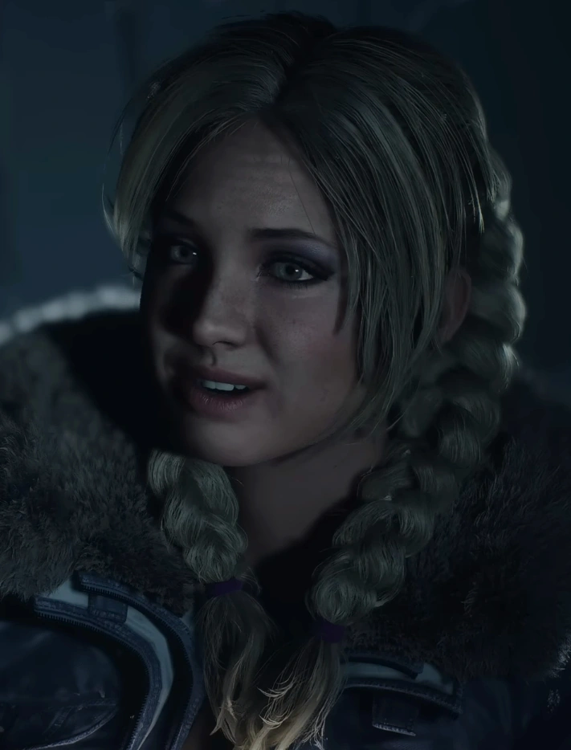

Jess is the person who sets up the prank on Hannah, being the minds of the operation. She does this after she finds a note Hannah wrote about how she liked Mike, and wants to "Protect Em".
Jess tries to solidify herself as a mean girl at the start of the game, but where Emily sticks to her persona throughout the night, Jess definitely becomes more soft. We see a small example of this when her and Mike have a snowball fight, but her real feelings can really come out when her and Mike are in their cabin after her and Emily get into a fight. When she gets taken by Handigo, Mike has to save her, and she can possibly be the first death of the game.
Jess takes a nap in the mines.
Once she wakes up, Jess gets up, grabs a miner coat, and almost murders Matt when she thinks hes Handingo and tries to hit him with a pipe. The two enter their chase scene, and possibly survive the night.
After the beginning of the game, Jess falls heavily to the wayside, and takes a big backseat. Despite this, i think her character shift is really impactful and a great piece of the game.
Jessica's Score: 7.5/10
